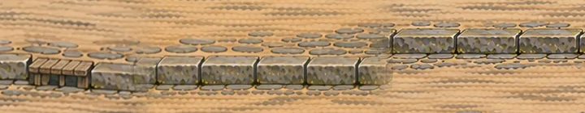
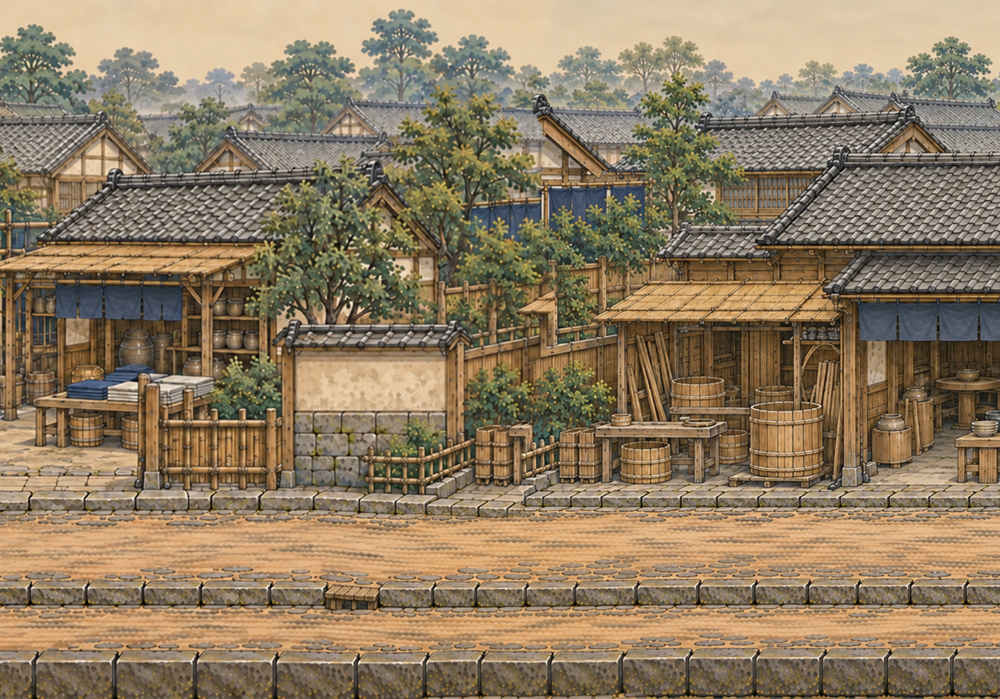
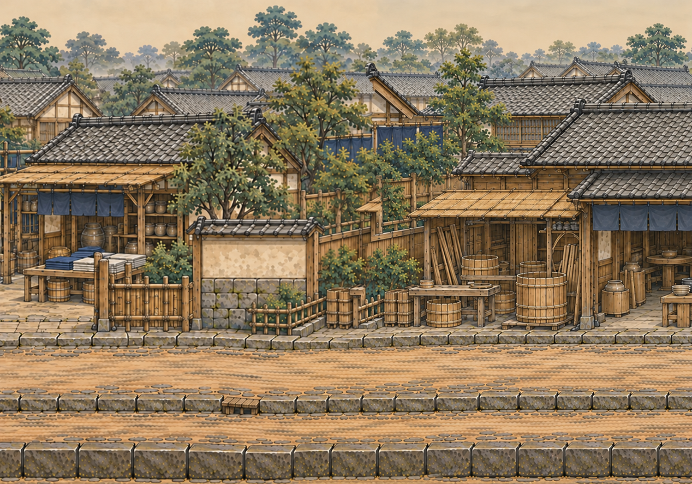

江户10|11：中排石沿 v3 候选
原图来自 main e1a5ba5，运行坐标 x=3500–4500、y=0–700；已整卷镜像。这里用 SVG 裁窗把候选03映射回同一位置，模拟一个窄补丁；没有改生产图片。
候选03建议仅局部试接。图像编辑输出带黑边，裁窗是 x=0,y=151,w=2170,h=420。候选01/02会移动补丁外的建筑和石沿，不建议接入；本页不把完整重绘盖到生产图。
补丁映射：底图像素 x=420,y=750,w=720,h=140；整卷运行像素 x=5320,y=750（1.4px/世界单位）；世界 x≈3800–4314.286,y≈535.714–635.714。它跨 street-3 / street-4，不是未镜像的源段11。
路沿近看
当前生产：右侧突升
候选03：渐进上坡，精确边缘仍由接入者比较
未采用的全幅候选01/02

01：台阶消除，但两端整行高度改变。
02：仍有画外漂移，不能整幅覆盖。